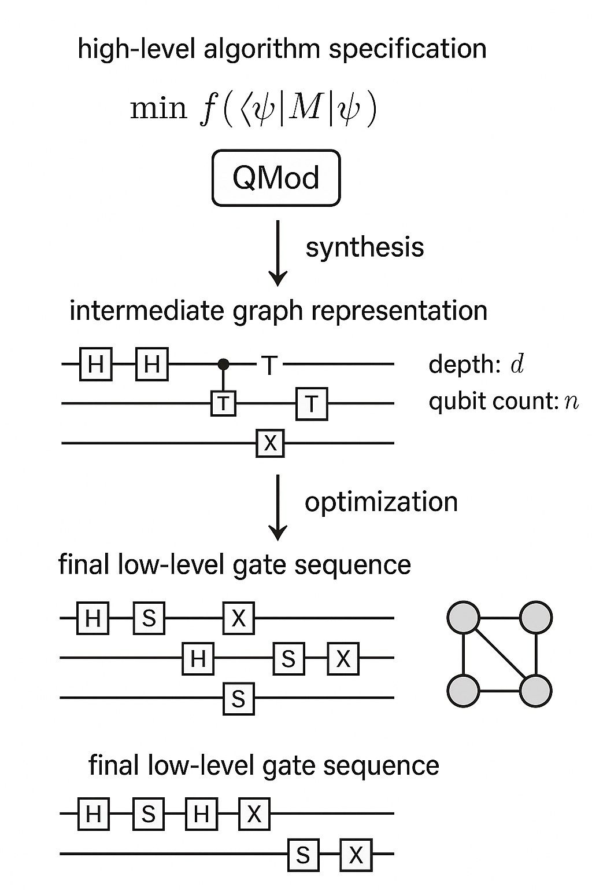
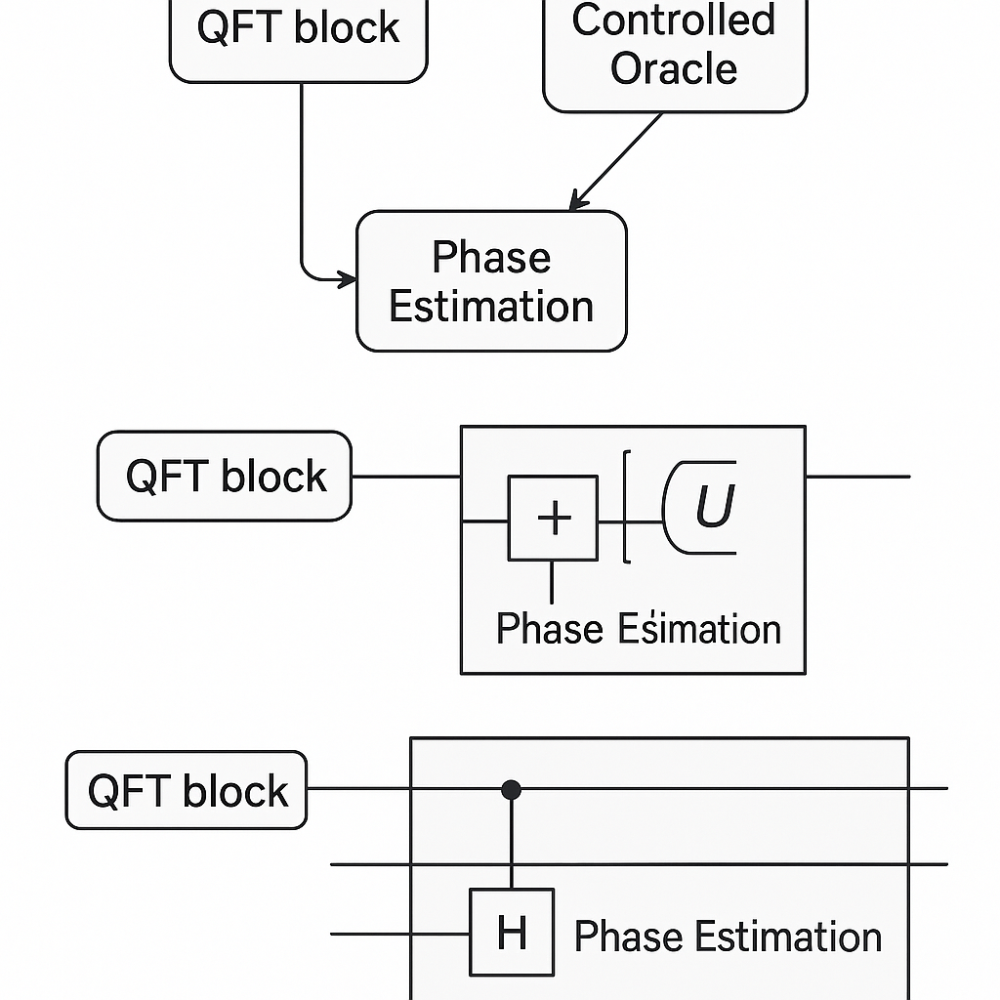
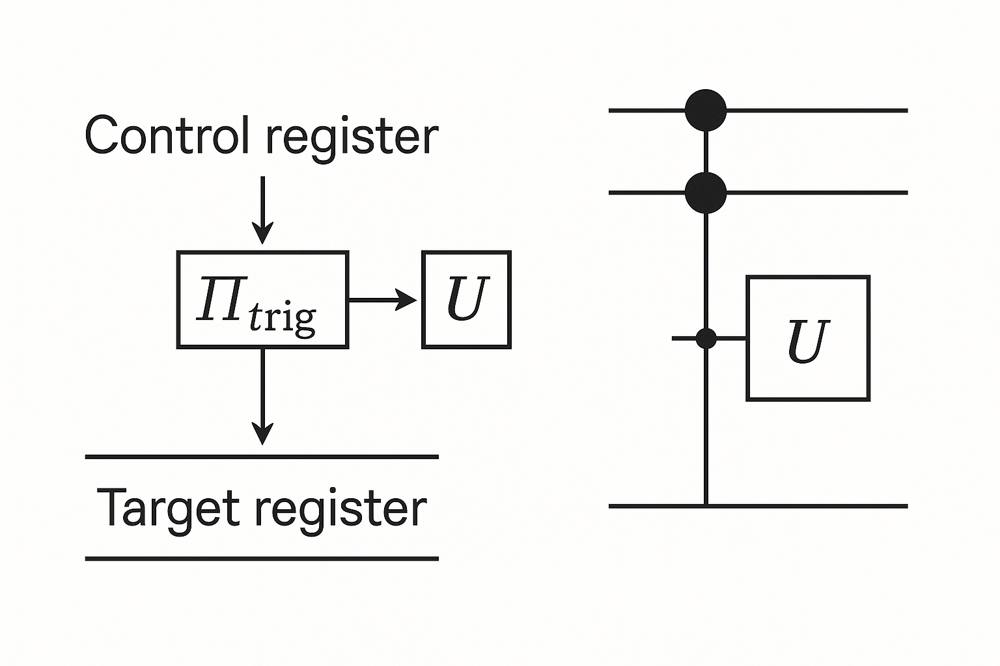
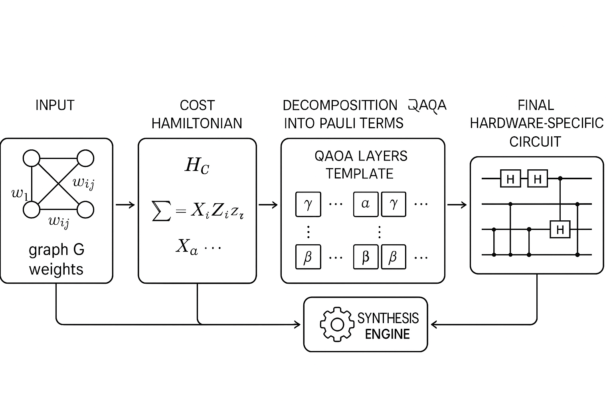
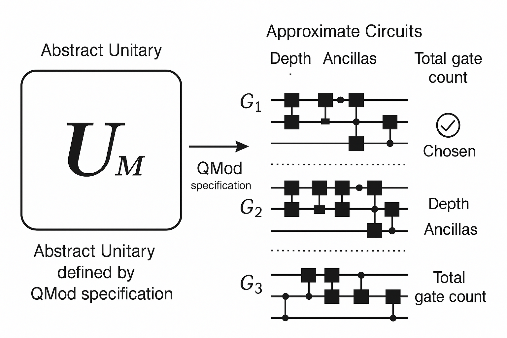
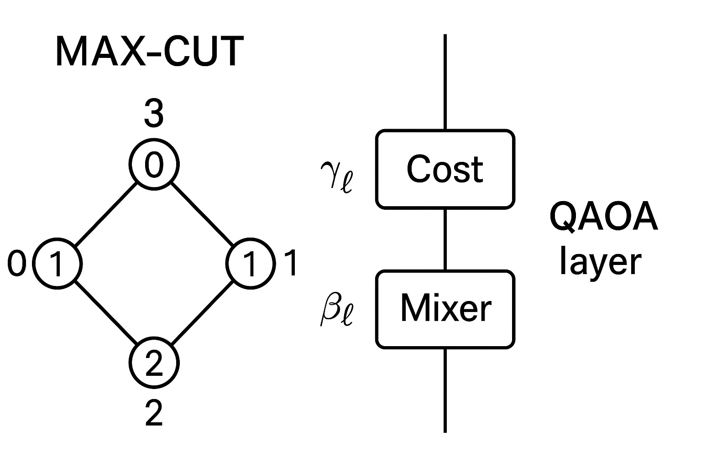
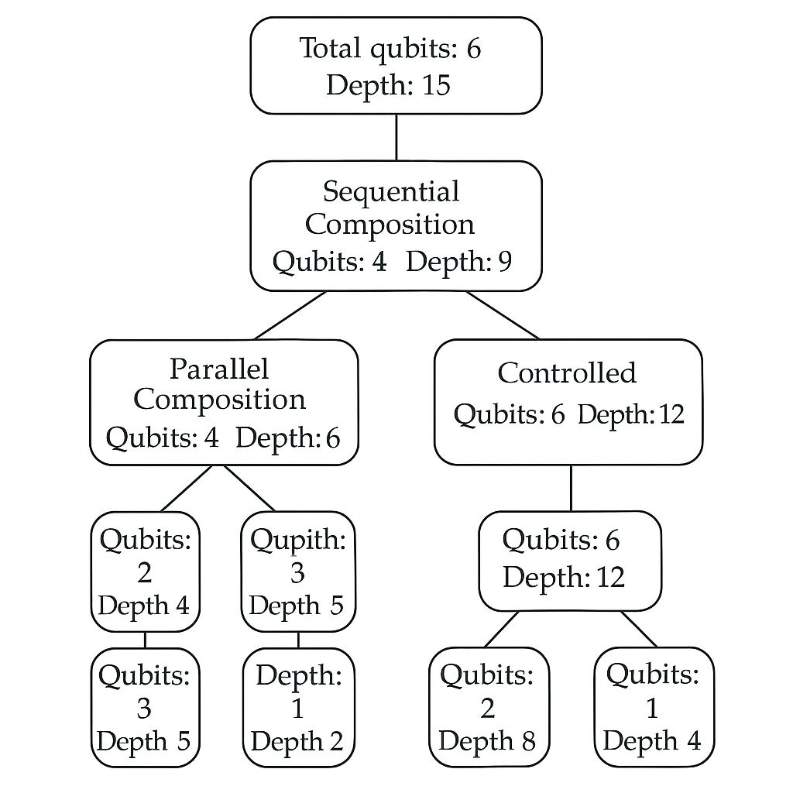

Generated by ChatGPT on 2025-12-02
本講進入 Classiq 平台的第二個核心主題：以高階建模語言 QMod 進行量子演算法規格化，並透過形式化約束導出最佳化量子電路。我們將從數學結構與語義層面分析 QMod，探討其與標準量子電路模型、受控單位算符、及最佳化問題（如整數線性規劃、convex relaxation）之間的關係，並示範如何在 Classiq SDK 中把「演算法描述」轉換為「硬體可執行電路」。

Classiq 的核心理念是：不要直接設計 gate-level 電路，而是以高階結構描述量子運算，讓平台自動完成綜合與最佳化。為了達成這點，QMod（或等價的 Python DSL）本質上是一個量子程式的抽象語法樹（AST）與操作圖同時存在的結構。
從數學上可將 QMod 程式解釋為一個有向無環圖 \( G = (V, E) \)，其中：
for 迴圈、if-else 分支、controlled 結構。令 \( \mathcal{H} = \bigotimes_{i=1}^n \mathbb{C}^2 \) 為 \( n \) 個量子位的希爾伯特空間。若每一節點 \( v \in V \) 對應一個在子空間上作用的單位算符 \( U_v \)，則整個 QMod 程式可解釋為： \[ U_{\text{total}} = \prod_{v \in \prec} U_v, \] 其中 \( \prec \) 為某一種尊重有向邊拓撲序的排序（topological order），對應於「時間先後」或「電路深度」。
重點在於：QMod 對應的 \( U_{\text{total}} \) 並不需要在程式撰寫階段完全展開成底層 gate；Classiq 會根據目標硬體與約束，選擇一種（或多種）合適的 gate 分解與排程。

考慮兩個 QMod 模組 \( M_1, M_2 \)，假設它們分別對應於量子操作： \[ M_1 \mapsto U_1, \quad M_2 \mapsto U_2, \] 那麼在 QMod 中「串接」操作（sequential composition）： \[ M = M_2 \circ M_1 \] 對應於量子算符的乘積： \[ M \mapsto U_M = U_2 U_1. \]
同時，若兩個模組作用於不同量子位子集 \( S_1, S_2 \subseteq \{1,\dots,n\} \)，且 \( S_1 \cap S_2 = \varnothing \)，則可以視為張量組合： \[ M_1 \oplus M_2 \mapsto U_1 \otimes U_2. \]
QMod 中的組合子（combinators）可以視為對這些結構的抽象封裝，例如：
在 Classiq 內部，這些抽象結構最終會被展開為受控單位算符與類 Toffoli 閘的組合，但使用者不需要直接手動實作這些底層結構。
控制結構是 QMod 的關鍵能力之一：允許以「語意層級」定義受控運算，而非手動構造控制線路。從理論上看，這對應於在較大希爾伯特空間上的 block-diagonal 單位算符。
令 \( \mathcal{H}_c \) 為控制量子位空間（可能多個 qubits），\( \mathcal{H}_t \) 為目標量子位空間。我們希望定義一個受控單位算符： \[ U_{\text{ctrl}} : \mathcal{H}_c \otimes \mathcal{H}_t \to \mathcal{H}_c \otimes \mathcal{H}_t, \] 其在某一控制狀態子空間 \( \mathcal{H}_{\text{trig}} \subseteq \mathcal{H}_c \) 觸發時對 \( \mathcal{H}_t \) 作用 \( U \)，否則作用為 \( I \)。
形式上，設 \[ \Pi_{\text{trig}} : \mathcal{H}_c \to \mathcal{H}_c \] 為投影到觸發子空間（例如所有控制 qubits 為 \(|1\rangle\) 的子空間），則可寫作： \[ U_{\text{ctrl}} = \Pi_{\text{trig}} \otimes U + (I - \Pi_{\text{trig}}) \otimes I. \] 這顯然是單位算符，因為： \[ U_{\text{ctrl}}^\dagger U_{\text{ctrl}} = \Pi_{\text{trig}} \otimes U^\dagger U + (I - \Pi_{\text{trig}}) \otimes I = \Pi_{\text{trig}} \otimes I + (I - \Pi_{\text{trig}}) \otimes I = I. \]
在 QMod 中，我們以類似如下 pseudo-code 指定：
with control(ctrl_qubits):
apply(U, target_qubits)
Classiq 會推斷出對應 \( \Pi_{\text{trig}} \) 的結構（例如所有 ctrl_qubits = 1），並合成對應的多重控制閘網路。

對於 \( m \) 個控制量子位與目標運算 \( U \)（作用於 \( k \) 個 qubits），若直接生成一個 \( m \)-控制的 \( U \)，在標準 Clifford+T gate set 下的實作成本通常會以 \( O(m + \text{cost}(U)) \) 的 \( T \)-閘數量成長，甚至需要額外的 ancilla qubits。
以多重控制 NOT（即一般化 Toffoli）為例，資料顯示在允許一些輔助量子位時，可達到 \( T \)-閘數目： \[ T_{\text{Toffoli}(m)} \approx 4m - 4, \] 而在無 ancilla 情況下代價更高。Classiq 在合成時會在下列目標之間做 trade-off：
因此，在 QMod 層級寫出簡單的控制結構：
with control(ctrl_qubits):
complex_oracle(qubits)
其實已經隱含了「在後端做控制成本最佳化」的指令。這種分離「語意」與「實現」的設計，對於大型演算法，特別是 QAOA、VQE、Grover 類演算法的 oracle 構造，具有關鍵意義。
Classiq library 中有大量「演算法模板」（algorithmic templates），例如 QAOA、VQE、量子相位估計等，這些模板在 QMod 語意上是參數化電路：
令 \( \boldsymbol{\theta} \in \mathbb{R}^p \) 為參數向量，則一個模板對應函數： \[ \boldsymbol{\theta} \mapsto U(\boldsymbol{\theta}), \] 而整個 QMod 模式產出的最終態為： \[ |\psi(\boldsymbol{\theta})\rangle = U(\boldsymbol{\theta}) |0\rangle^{\otimes n}. \]
以 QAOA 為例，目標為近似解一個組合最佳化問題，例如 MAX-CUT。問題通常可表示為一個 Ising 形式的成本哈密頓量： \[ H_C = \sum_{(i,j) \in E} w_{ij} \frac{1 - Z_i Z_j}{2}, \] 其中 \( Z_i \) 是第 \( i \) 個 qubit 的 Pauli-Z 算符，\( E \) 為圖的邊集合，\( w_{ij} \) 為權重。
QAOA 深度為 \( p \) 時，其演化算符為： \[ U(\boldsymbol{\gamma}, \boldsymbol{\beta}) = \prod_{l=1}^p \left[ e^{-i \beta_l H_M} e^{-i \gamma_l H_C} \right], \] 其中 \( H_M = \sum_i X_i \) 為 mixing Hamiltonian。這裡 \( (\boldsymbol{\gamma},\boldsymbol{\beta}) \in \mathbb{R}^{2p} \) 為可調參數。
在 QMod 層級，我們不直接寫出每個 \( e^{-i \gamma_l H_C} \) 的 gate 展開，而是指定：
Classiq 的 QAOA 模板會：
這樣的流程可形式化為一個 mapping： \[ \Phi : (G, \boldsymbol{w}, p, \boldsymbol{\gamma}, \boldsymbol{\beta}) \mapsto U(\boldsymbol{\gamma}, \boldsymbol{\beta}), \] 其中 \( \Phi \) 實質上就是 QMod 模板加上 Classiq 綜合器的行為。

cost Hamiltonian H_C -> decomposition into Pauli terms -> QAOA layers template with parameters gamma, beta -> synthesis engine -> final hardware-specific circuit. Each stage is shown as a box with arrows between them.">對於研究者而言，關鍵問題之一是：如何對參數化電路進行梯度估計（parameter-shift rules），尤其當電路並非手寫，而是由 QMod 合成時。
假設電路中每個參數只出現在形如 \[ R_{\hat{n}}(\theta) = e^{-i \theta P/2} \] 的旋轉閘中，其中 \( P \) 為 Pauli 字串，且 \( P^2 = I \)。則對可觀察量 \( O \) 的期望值： \[ f(\boldsymbol{\theta}) = \langle 0 | U^\dagger(\boldsymbol{\theta}) O U(\boldsymbol{\theta}) | 0 \rangle, \] 對某個參數 \( \theta_j \) 的偏導可用 parameter-shift 規則： \[ \frac{\partial f}{\partial \theta_j} = \frac{1}{2} \left[ f(\boldsymbol{\theta} + \frac{\pi}{2}\mathbf{e}_j) - f(\boldsymbol{\theta} - \frac{\pi}{2}\mathbf{e}_j) \right]. \]
若 QMod 模板保證所有參數閘都屬於此形式（或其簡單變體），則在演算法層級即可斷言整個模板支援高效率的梯度估計。Classiq 的做法是：
因此，在高階層級設計時就能對優化演算法（如 gradient-based VQE）的可行性與樣本複雜度做理論推估。
Classiq 的綜合器（synthesizer）可以視為從高階 QMod 規格到 gate-level 電路的映射： \[ S : \mathcal{M} \times \mathcal{C} \to \mathcal{G}, \] 其中：
綜合問題可形式化為一個約束最佳化問題： \[ \begin{aligned} &\text{給定 } M \in \mathcal{M},~ C \in \mathcal{C},\\ &\text{尋找 } G \in \mathcal{G} \end{aligned} \] 使得 \[ \|U_G - U_M\| \le \varepsilon, \] 同時滿足 \[ \text{cost}(G; C) = \alpha_1 \cdot \text{depth}(G) + \alpha_2 \cdot \text{gate\_count}(G) + \alpha_3 \cdot \text{ancilla}(G) \] 被最小化，且符合硬體約束與錯誤模型需求。

對於實際硬體，qubits 間連線受限於拓撲圖 \( G_{\text{hw}} = (V_{\text{hw}}, E_{\text{hw}}) \)。若 QMod 中的量子位邏輯關係超出硬體連接範圍，則必須插入 SWAP 閘或透過路徑路由。這對應於圖嵌入問題：
令邏輯 qubit 圖為 \( G_{\text{log}} \)，其邊表示需要兩 qubits 之間執行雙量子位閘（如 CNOT）。綜合時需尋找嵌入 \[ \phi : V_{\text{log}} \to V_{\text{hw}}, \] 使得每條邏輯邊 \( (i,j) \in E_{\text{log}} \) 對應到硬體圖中的一條「路徑」： \[ \phi(i) = v_0, v_1, \dots, v_L = \phi(j), \quad (v_k, v_{k+1}) \in E_{\text{hw}}. \]
在這條路徑上實現邏輯 CNOT 通常需要插入一系列 SWAP，導致深度與 gate 數量增加。這可形式化為： \[ \min_{\phi, \{\text{routing}\}} \text{total\_SWAPs}(G, \phi). \]
Classiq 綜合器在這點上的優勢是：在 QMod 層級就可重排電路結構與模組順序，以減少 biclique 大小與路由需求，而不僅僅在 gate 層做本地修補。
當使用非 Clifford 群閘（如 \( T \)-閘）實作任意單量子位旋轉時，通常採用 Solovay-Kitaev 類演算法或更進階的最優近似方法，導致目標單位算符 \( U \) 被某個 \( \tilde{U} \) 所近似，滿足： \[ \| U - \tilde{U} \| \le \delta, \] 其中 \( \| \cdot \| \) 可以採用 operator norm 或 diamond norm。
若 QMod 中描述的整體演算 \( U_M \) 被分解為 \[ U_M = U_k \cdots U_2 U_1, \] 每個 \( U_j \) 被近似為 \( \tilde{U}_j \) 並滿足 \[ \|U_j - \tilde{U}_j\| \le \delta_j, \] 則整體誤差可由次乘性界給出： \[ \begin{aligned} \|U_M - \tilde{U}_M\| &= \|U_k \cdots U_1 - \tilde{U}_k \cdots \tilde{U}_1\| \\ &\le \sum_{j=1}^k \delta_j \prod_{l=j+1}^k \|\tilde{U}_l\| \\ &= \sum_{j=1}^k \delta_j, \end{aligned} \] 因為 \( \|\tilde{U}_l\| = 1 \)。因此，一個全域誤差門檻 \( \varepsilon \) 可以透過局部誤差分配策略： \[ \sum_{j=1}^k \delta_j \le \varepsilon \] 來確保。Classiq 在綜合過程中可以根據這樣的誤差預算替每個近似子模組選擇適當的精度，平衡 \( T \)-閘數量與整體誤差。
以下以 Python 介面示範如何在 Classiq 平台上實作一個具有多重控制、參數化旋轉與 QAOA 結構的電路，而不用手寫底層閘：
假設我們有一個四節點圖 \( G = (V, E) \)，其中 \( V = \{0,1,2,3\} \)，邊： \[ E = \{(0,1), (1,2), (2,3), (3,0)\}, \] 為一個四邊形。MAX-CUT 成本哈密頓量為： \[ H_C = \sum_{(i,j) \in E} \frac{1 - Z_i Z_j}{2}. \]
在 Classiq 中，我們可以這樣寫（概念化程式碼）：
from classiq import Model
from classiq.builtin_functions import qaoa_maxcut
# 1. 定義圖
edges = [(0, 1), (1, 2), (2, 3), (3, 0)]
# 2. QAOA 參數與層數
p_layers = 2
# 3. 建立 QMod 模型
with Model() as m:
# 自動根據圖與層數建立 QAOA 模板
qaoa_maxcut(
edges=edges,
p=p_layers,
gammas=["gamma_1", "gamma_2"], # symbolic parameters
betas=["beta_1", "beta_2"]
)
# 4. 編譯與綜合，指定硬體與約束
from classiq import synthesize
qpu_constraints = {
"max_qubits": 4,
"max_depth": 200,
# 其他硬體資訊，例如拓撲與原生閘
}
qprog = synthesize(m, constraints=qpu_constraints)
print(qprog)
上述程式片段中，qaoa_maxcut 即是一個高階 QMod 模板呼叫。整個 QMod 物件 \( m \) 描述了
\[
|\psi(\boldsymbol{\gamma}, \boldsymbol{\beta})\rangle = U(\boldsymbol{\gamma},\boldsymbol{\beta})|0\rangle^{\otimes 4},
\]
而不是任何具體的 gate-level 序列。

假設在 QAOA 的 cost layer 中，我們需要一個「加強版」邊權重 oracle，其結構為：
數學上，這是一個二階控制（control on 邊兩端 qubits + 輔助 register）的受控運算。
在 QMod 中，可寫作：
from classiq import qubit, control
anc = qubit() # Classiq 會自動管理 ancilla 的生命週期
with control([q0, q1, anc]):
# 只在 q0, q1 和 anc 同時為 |1> 時作用
rz(theta="gamma_1", target=q2)
此段程式邏輯描述的是 \[ U_{\text{ctrl}} = \Pi_{\text{trig}} \otimes R_z(\gamma_1) + (I - \Pi_{\text{trig}}) \otimes I, \] 其中 \( \Pi_{\text{trig}} \) 投影到狀態 \(|q_0 = 1, q_1 = 1, \text{anc} = 1\rangle\)。在 gate-level，可能以一連串 Toffoli 和單量子位旋轉實作，但 QMod 不需要暴露這些細節。
值得注意的是，ancilla 的生命週期與 uncomputation（還原） 也可以透過 QMod 結構推導。Classiq 會自動把 ancilla 的使用包在可逆計算與反運算中，保證最終 ancilla 回到 \(|0\rangle\) 狀態，避免殘留垃圾資訊。
對進階研究者而言，一個重要問題是：如何從高階 QMod 描述中預估所需量子資源（qubit 數、深度、錯誤門檻等等），並與已知下界比較。
令一個 QMod 程式 \( M \) 可以分解為基本操作模組集合 \( \{B_j\} \) 的組合： \[ M = F(B_1, B_2, \dots, B_m), \] 其中 \( F \) 是組合子運算（例如串接、控制、迴圈等）。對每個基本模組 \( B_j \)，Classiq library 中通常會有對應的 resource model，給出：
對於組合，則有類似遞迴關係：
這給出一種自動化複雜度分析框架，使得研究者可以從 QMod 層級推估整體資源用量，而不用手動數 gate。

例如，對 MAX-CUT 問題，已知在一般情況下其經典近似演算法（如 Goemans–Williamson）達到常數近似比且多項式時間。對 QAOA 的量子優勢是否存在，尚為開放問題，但我們可以從資源角度做理性比較：
藉由 QMod + 綜合器，我們可以實際產生給定 \( n, p \) 下的電路，計算其深度與 qubit 數，並把 \( d_{\text{Classiq}} \) 與理論 \( d_{\min} \) 相比，量化「距離最優」的程度。這對設計新演算法或驗證量子近似優勢假說非常實用。
本講從理論與實務兩個層面深入探討了 Classiq 的第二個核心主題：以高階 QMod 語意描述量子演算法，並透過形式化約束導出最佳化電路。要點如下：
未來研究方向包括：
下一講將聚焦於：Classiq library 內特定演算法模組的數學結構解析（例如 QPE、Amplitude Estimation 與線性求解器），以及如何利用 QMod 精煉這些演算法的變種設計。
逐字稿下載：ChatGPT_zh_L02_第_2_講_Classiq_量子計算平台主題_2.txt
完整音檔：
Segment 1:
Segment 2:
Segment 3:
Segment 4:
Segment 5:
Segment 6:
Segment 7:
Segment 8:
Segment 9:
Segment 10:
Segment 11: